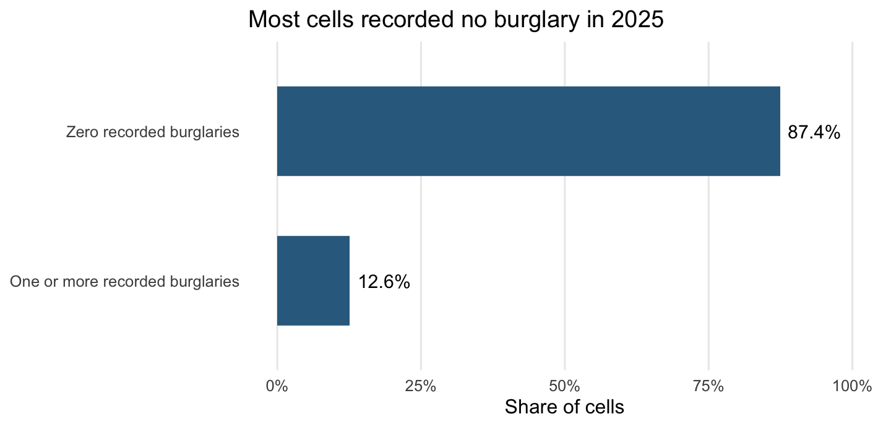
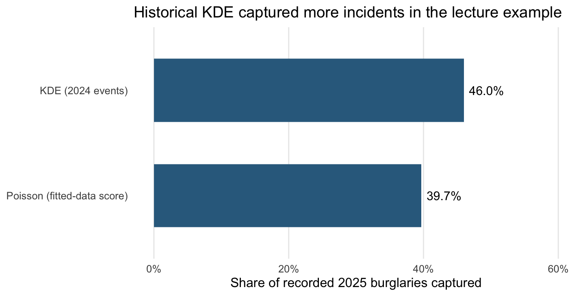

Week 9: Predictive Policing, Fishnets, and Count Models
Poisson regression, historical hotspots, KDE baselines, and the limits of learning from police records.
What We Did
This week moved from predicting a house price to predicting the number of recorded residential burglaries in a small area. We defined 500-foot fishnet cells, built spatial features from 2024 records, and compared OLS, Poisson regression, and a historical kernel density estimate (KDE) against 2025 counts. We also asked what these records measure and how a prediction changes policing.
These notes follow Dr. Elizabeth Delmelle’s October 30 lecture, Predictive Policing: Counts, Fishnets, and Dirty Data. Peer notes by terbear15 and CyannnZ were used to check topic coverage. The numerical results below are the Philadelphia outputs saved in the supplied lecture, not a new data download or the Chicago lab results. Its five map/histogram PNGs were not supplied; the two charts here reconstruct reported summaries, not missing empirical maps.
Key Concepts
- Define the observation: one row is a grid cell, including cells with zero events.
- A Poisson GLM with a log link models the expected count, not
log(Y). - Exponentiated coefficients are multipliers, conditional on the other predictors.
- Historical features can be available at prediction time while the evaluation is still in-sample. Those are separate issues.
- A simple baseline is essential; added complexity does not guarantee better ranking.
- Recorded incidents reflect reporting and recording practices as well as events. Good prediction of those records does not establish fairness or causal effects.
Notes
1. Predictive policing: the outcome matters before the algorithm
The lecture contrasts historical hotspot maps, risk-terrain approaches, machine-learning systems, and person-based network predictions. Their promises include efficient deployment, objectivity, and prevention. None of these follows automatically from using an algorithm. A map of past records can partly be a map of past patrols, trust in police, and willingness to report.
The extended meaning of dirty data in Richardson, Schultz, and Crawford (2019) includes records produced through biased, manipulated, or unlawful practices, not just missing values and inconsistent formats. The lecture’s examples include false arrests, downgraded classifications, discouraging reports, disproportionate stops, and ignored complaints. Arrests are not interchangeable with offenses committed; calls for service are not a complete measure of need.
Past records → predicted hotspot → more patrols → more detected/recorded events
↑ │
└──────────────── next training data ─────────────────┘This feedback can occur without an equivalent increase in underlying crime. Burglary is relatively victim-reported; drug-possession records are much more dependent on officer activity. Neither recording process is a neutral census.
2. Points become rows through a fishnet
The lecture query selects Burglary Residential, nonmissing geometry, and a half-open calendar-year interval: January 1 of the year through, but not including, January 1 of the next year. It returns 3,289 records for 2024 and 2,999 for 2025. The supplied slides use carto_get() as an existing helper; they do not define it. The following workflow assumes the spatial data have already been loaded rather than presenting that helper as a built-in R function.
library(sf)
library(dplyr)
# Prerequisites: philly (city polygon), burg_2024 and burg_2025 (points).
philly <- st_transform(philly, 2272)
burg_2024 <- st_transform(burg_2024, 2272)
burg_2025 <- st_transform(burg_2025, 2272)
fishnet <- st_make_grid(philly, cellsize = 500, square = TRUE) %>%
st_sf() %>%
st_filter(philly) %>%
mutate(cell_id = row_number())
fishnet <- fishnet %>%
mutate(burglaries = lengths(st_intersects(., burg_2025)))| Operation | Meaning |
|---|---|
st_transform(..., 2272) |
Use Pennsylvania South State Plane, in US survey feet. |
st_make_grid(..., cellsize = 500) |
Create squares with 500-foot sides, not 500 square feet of area. |
st_filter(philly) |
Retain intersecting cells; it does not clip their geometry to the city boundary. |
st_intersects() |
Return a list of matching event indices for each cell. |
lengths() |
Count each list element; an empty element gives zero. |
The resulting table has 16,414 cells. A cell with no recorded burglary stays in the data. Dropping zero cells would change the prediction task to places where at least one incident has already been observed.
Census tracts vary in area and were designed for population reporting. A regular grid makes spatial support more consistent, but does not remove the modifiable areal unit problem (MAUP): changing cell size or grid origin can change counts and patterns. Equal area also does not mean equal numbers of homes or equal opportunities for burglary. This is a count model, not automatically a per-household risk model. Boundary cells retained by st_filter() extend outside the city, and a point exactly on a shared cell edge can match multiple cells; check incident-count reconciliation in a production workflow.
3. Why count outcomes need a different model
The lecture outcome has mean 0.1827099, variance 0.3379670, and a zero share of 0.8740709, or about 87.4%. The zero share is computed by mean(fishnet$burglaries == 0): TRUE contributes 1 and FALSE contributes 0.
OLS can produce negative fitted counts and does not constrain the mean to be positive. Counts also often have larger variation where the expected count is larger, conflicting with the usual constant-variance error model. This does not mean OLS cannot be fitted or that a decimal prediction is itself wrong: the prediction estimates a mean, which may be fractional under either model.
Directly taking log(Y) fails for zero counts. log(Y + 1) is a different transformed-outcome model; it is not equivalent to Poisson regression.
4. Poisson regression logs the mean, not each observation
For cell \(i\):
\[ Y_i\mid X_i\sim\operatorname{Poisson}(\lambda_i),\qquad \log(\lambda_i)=\eta_i=\beta_0+\sum_j\beta_jX_{ji},\qquad \lambda_i=\exp(\eta_i)>0. \]
An observed count is an integer, but its expected value can be 0.18 or 2.7. A positive expected count is compatible with an observed zero. The log link does not require removing zero observations or adding one to them.
pois <- glm(burglaries ~ cars_cnt, family = poisson(link = "log"),
data = fishnet)
predict(pois) # eta: log expected count
predict(pois, type = "response") # lambda: expected countFor this GLM, predict() defaults to the link scale. Compare observed counts with response-scale predictions when calculating count MAE or RMSE. If newdata is omitted, these are fitted-data predictions, not a held-out test. See the R prediction documentation.
5. Coefficient interpretation, with the unit kept attached
Holding other predictors fixed, changing \(X_j\) by \(\Delta\) multiplies the expected count by \(e^{\beta_j\Delta}\):
\[\%\text{ change}=100\left(e^{\beta_j\Delta}-1\right).\]
For a one-unit increase and \(\beta=0.20\), \(e^{0.20}=1.2214\), so the expected count is about 22.1% higher, not 0.20 incidents higher and not a 22.1-point increase in crime probability.
The fitted lecture model reports these rounded coefficients:
| Term | Beta | Multiplier for +1 model unit | Interpretation |
|---|---|---|---|
| Intercept | 1.920 | 6.81 | Expected count when every model predictor is zero; this may not be a representative location. |
cars_cnt |
0.026 | 1.026 | One additional abandoned-vehicle request: about 2.6% higher expected count. |
log_light_nn1 |
-0.341 | 0.711 | +1 in log distance, not +1 foot: about 28.9% lower expected count. |
log_graffiti_nn3 |
-0.113 | 0.893 | +1 in log mean distance: about 10.7% lower expected count. |
cityhall_mi |
-0.017 | 0.983 | One additional mile: about 1.7% lower expected count. |
hotspot_dist_mi |
-1.450 | 0.235 | One additional mile: about 76.5% lower expected count. |
The lecture prints exp_beta = 0.234 for the last row, using its unrounded estimate. Exponentiating the displayed rounded beta gives about 0.23457. Either implies roughly 76.5–76.6% fewer expected records. Do not confuse “23.4% as many” with “23.4% fewer.”
For a logged predictor, a distance ratio \(r\) gives a count multiplier \(r^\beta\). Doubling the light-outage distance gives \(2^{-0.341}\approx0.7895\), about 21.1% fewer expected records. A 1% distance increase corresponds to approximately a 0.341% decrease. These are associations, not evidence that removing a car or repairing a light causes the predicted change.
6. Overdispersion is a model check, not a verdict from one summary
The Poisson assumption is conditional:
\[\operatorname{Var}(Y_i\mid X_i)=E(Y_i\mid X_i)=\lambda_i.\]
The lecture’s raw variance exceeds its raw mean. This is a useful warning, but different cells can have different expected counts. Even a correctly specified Poisson regression can have an unconditional variance larger than its overall mean. Diagnose remaining dispersion after fitting rather than declaring failure from the two raw summaries alone. Many zeros also do not by themselves prove that a zero-inflated model is required.
The lecture previews negative binomial regression, which allows extra conditional variation, commonly expressed as \(\operatorname{Var}(Y_i\mid X_i)=\lambda_i+\lambda_i^2/\theta\). MASS::glm.nb() is the R function. Negative binomial estimation and geographic cross-validation are follow-up topics, not completed validation results in the supplied Week 9 code.
7. Four spatial feature types
The lecture uses 2024 311 requests named Abandoned Vehicle, Street Light Outage, and Graffiti Removal. Verify category names when moving to another city: the Chicago lab uses different request labels and EPSG:3435, not 2272.
| Type | Lecture variable | Meaning / unit |
|---|---|---|
| Count within cell | cars_cnt |
Number of abandoned-vehicle requests within that polygon |
| Nearest distance | light_nn1 |
Centroid to nearest reported streetlight outage, feet |
| Mean kNN distance | graffiti_nn3 |
Average distance to the three nearest graffiti-removal requests, feet |
| Distance to fixed point | cityhall_mi |
Centroid to City Hall, converted to miles |
centroids <- st_centroid(fishnet)
knn_dist <- function(from, to, k) {
nn <- FNN::get.knnx(data = st_coordinates(to),
query = st_coordinates(from), k = k)
rowMeans(nn$nn.dist)
}
city_hall <- st_sfc(st_point(c(-75.1635, 39.9526)), crs = 4326) %>%
st_transform(2272)
fishnet <- fishnet %>%
mutate(cars_cnt = lengths(st_intersects(., abandoned_cars)),
light_nn1 = knn_dist(centroids, light_outages, 1),
graffiti_nn3 = knn_dist(centroids, graffiti, 3),
cityhall_mi = as.numeric(st_distance(centroids, city_hall)) / 5280)
# Check positive, finite distances before taking logarithms.
stopifnot(all(is.finite(fishnet$light_nn1) & fishnet$light_nn1 > 0),
all(is.finite(fishnet$graffiti_nn3) & fishnet$graffiti_nn3 > 0))
fishnet <- fishnet %>%
mutate(log_light_nn1 = log(light_nn1),
log_graffiti_nn3 = log(graffiti_nn3))The to coordinates are the reference events; from coordinates are the query centroids. rowMeans() averages the \(k\) distances for each query, not across all cells. The fixed City Hall location is known in advance; the event-derived features are restricted to 2024. Reporting ability and willingness can bias 311 predictors as well as the crime outcome.
8. LISA becomes a historical predictor
Week 8 used LISA to diagnose clustered errors. Here it is applied to 2024 burglary counts, then converted into a predictor for the 2025 outcome.
library(spdep)
fishnet <- fishnet %>%
mutate(burg_2024 = lengths(st_intersects(., burg_2024)))
nb <- knn2nb(knearneigh(st_coordinates(centroids), k = 8))
lw <- nb2listw(nb, style = "W")
set.seed(5080)
lisa <- localmoran_perm(fishnet$burg_2024, lw, nsim = 999)
fishnet <- fishnet %>%
mutate(quadrant = attr(lisa, "quadr")$mean,
p_value = lisa[, "Pr(folded) Sim"],
hotspot = quadrant == "High-High" & p_value < 0.05)
hot_pts <- centroids[which(fishnet$hotspot), ]
stopifnot(nrow(hot_pts) > 0)
fishnet$hotspot_dist_mi <- knn_dist(centroids, hot_pts, 1) / 5280Eight nearest neighbors approximate queen neighbors in an interior regular grid, but need not equal boundary-sharing neighbors at the edge. Row-standardized weights (style = "W") sum to one per nonempty row. The lecture uses 999 permutations and identifies 775 High–High cells with p < 0.05. High–High describes a cell and its spatial lag relative to their means; a positive local Moran statistic alone also includes Low–Low. Thousands of unadjusted local tests can flag some cells by chance.
hotspot_dist_mi is a distance to the nearest selected centroid, not a hotspot probability. It can be zero for a selected cell. The lecture does not log this variable. A hotspot must exist before this nearest-distance calculation is possible.
9. Feature leakage and test leakage are separate
2024 burglary / 311 records → historical features X
2025 burglary records → outcome Y
↓
fit on Y AND score on the same Y?
Yes in this demo → in-sample evaluationUsing 2025 burglaries to construct hotspots for predicting those same 2025 counts leaks the target. Using 2024 hotspots avoids that specific leakage, but does not make the later fitted-data score out-of-sample.
f <- burglaries ~ cars_cnt + log_light_nn1 + log_graffiti_nn3 +
cityhall_mi + hotspot_dist_mi
ols <- lm(f, data = fishnet)
pois <- glm(f, family = poisson(), data = fishnet)
fishnet$pred_ols <- predict(ols)
fishnet$pred_pois <- predict(pois, type = "response")The lecture reports 3,277 negative OLS predictions versus 0 negative Poisson predictions. This demonstrates a count-scale advantage, not proof that Poisson is the best forecast model. A fair forecasting comparison trains and tunes using information available before a common held-out period and evaluates both methods on that period. Geographic leave-one-group-out validation instead tests transfer to an unseen district: train on all but one district, score the held-out district, then repeat. It does not automatically test future time.
10. KDE is a baseline, not a coefficient model
KDE spreads each historical event into a smooth kernel and sums the contributions to estimate spatial intensity. The lecture uses 2024 events and a 1,000-foot bandwidth. Larger bandwidth means more smoothing; smaller bandwidth keeps more local detail. Neither extreme is automatically better. This is not the 500-foot fishnet cell size and not the eight-neighbor LISA rule.
bb <- st_bbox(fishnet)
win <- spatstat.geom::owin(xrange = c(bb["xmin"], bb["xmax"]),
yrange = c(bb["ymin"], bb["ymax"]))
xy <- st_coordinates(st_filter(burg_2024, philly))
events <- spatstat.geom::ppp(xy[, 1], xy[, 2], window = win)
kde_2024 <- spatstat.explore::density.ppp(events, sigma = 1000)
xy_cent <- st_coordinates(centroids)
query_pts <- spatstat.geom::ppp(xy_cent[, 1], xy_cent[, 2], window = win)
fishnet$kde_2024 <- spatstat.geom::safelookup(kde_2024, query_pts)The bounding-box window contains every centroid but is a simplification of the city boundary. The extracted intensity is a ranking score; it is not directly the expected number of incidents per cell without appropriate integration or calibration. Do not compare its raw units with count RMSE.
11. Top-area capture: numerator and denominator
For each method, rank cells by its score and select those at or above its 90th percentile. Then calculate:
\[ \text{Capture}=\frac{\text{2025 recorded burglaries inside selected cells}} {\text{2025 recorded burglaries across all analysis cells}}. \]
fishnet %>%
st_drop_geometry() %>%
mutate(model_top = pred_pois >= quantile(pred_pois, 0.9),
kde_top = kde_2024 >= quantile(kde_2024, 0.9)) %>%
summarize(model = sum(burglaries[model_top]) / sum(burglaries),
kde = sum(burglaries[kde_top]) / sum(burglaries))This is a share of incidents, not the percentage of cells classified correctly. Ties at the threshold can select more than exactly 10% of cells. Equal cell area makes the selected-cell share approximate an area budget; the city-boundary caveat still applies.

The displayed values are 39.67989% for Poisson and 45.98199% for KDE: KDE is higher by 6.30210 percentage points. A nearby slide sentence discusses what it would mean if the model barely won; the actual printed output shows that it did not win this comparison. Both the numerical result and the in-sample limitation matter. Neither establishes which will be best on a fair future test or whether deployment is justified.
12. The recording process can distort both X and Y
A useful simplified measurement model is:
\[ E[R]\approx N_{\text{actual}}\, P(\text{reported}\mid\text{event})\, P(\text{recorded}\mid\text{reported event}). \]
This is an expected-count illustration, not an exact identity for every realized count, and officer-initiated records have a different pathway. Two places with 100 actual incidents each could have expected recorded counts of 80 and 30 if their combined reporting/recording probabilities are 0.8 and 0.3. The lecture cites approximate 2024 NCVS reporting shares of 75% for motor vehicle theft, 41% for burglary/trespassing, and 25% for other theft. These are lecture-reported national survey summaries, not Philadelphia reporting rates.
Ordinary CV splits the same recorded database. If biased recording is present in both train and test data, low test RMSE can reward faithful reproduction of that bias. This is not a reason to abandon validation: it means validation against records answers a narrower question than accuracy about underlying crime.
The disorder predictors also embody a theory. Abandoned cars, broken lights, and graffiti were selected in relation to a broken-windows hypothesis. Their association with records does not prove that hypothesis, and the observed Xs are 311 reports rather than complete inventories of conditions. Historical crime features can inherit the same recording bias as the target.
An overpredicted cell may receive additional surveillance, stops, and other burdens. A responsible evaluation therefore also asks who is measured, who receives an intervention, who can contest errors, and whether non-enforcement responses would better address the underlying need. Statistical fit alone does not decide those policy questions.
Proving R Works
These calculations use the lecture’s coefficients and reported summaries. They do not rerun the Philadelphia models.
data.frame(
comparison = c("X +1, beta = 0.20", "Hotspot distance +1 mile",
"Double light-outage distance"),
multiplier = c(exp(0.20), exp(-1.45), 2^(-0.341)),
percent_change = 100 * (c(exp(0.20), exp(-1.45), 2^(-0.341)) - 1)
) comparison multiplier percent_change
1 X +1, beta = 0.20 1.2214028 22.14028
2 Hotspot distance +1 mile 0.2345703 -76.54297
3 Double light-outage distance 0.7894939 -21.05061100 * (0.4598199 - 0.3967989) # capture difference, percentage points[1] 6.3021Reflection
The biggest change from the house-price exercise is the measurement of the outcome. Predicting a recorded count well can mean predicting the reporting process well. I also need to distinguish a historical predictor from an honest test: using 2024 features does not turn a model fitted and scored on 2025 into a future forecast. The KDE result makes the baseline comparison concrete.
Questions I Still Have
- How sensitive are the results to grid size, grid origin, and KDE bandwidth?
- Would the ranking comparison change on the same held-out year or district?
- What independent evidence could assess missing victimization and the harms or benefits of the resulting intervention?
Sources and Scope
- Elizabeth Delmelle, Predictive Policing: Week 9 — Counts, Fishnets, and Dirty Data, supplied HTML dated October 30, 2026; primary source for the examples.
- terbear15 Week 9 and CyannnZ Week 9: peer coverage checks, not independent replications.
- R: Poisson family and links and predict.glm: link and response-scale conventions.
- Richardson, Schultz, and Crawford (2019), Dirty Data, Bad Predictions: the assigned reading discussed in the lecture; its discussion here follows the slides.
- Negative binomial and geographic CV are marked as previews. No Chicago lab, held-out forecast, or missing Philadelphia map has been substituted for a lecture result.